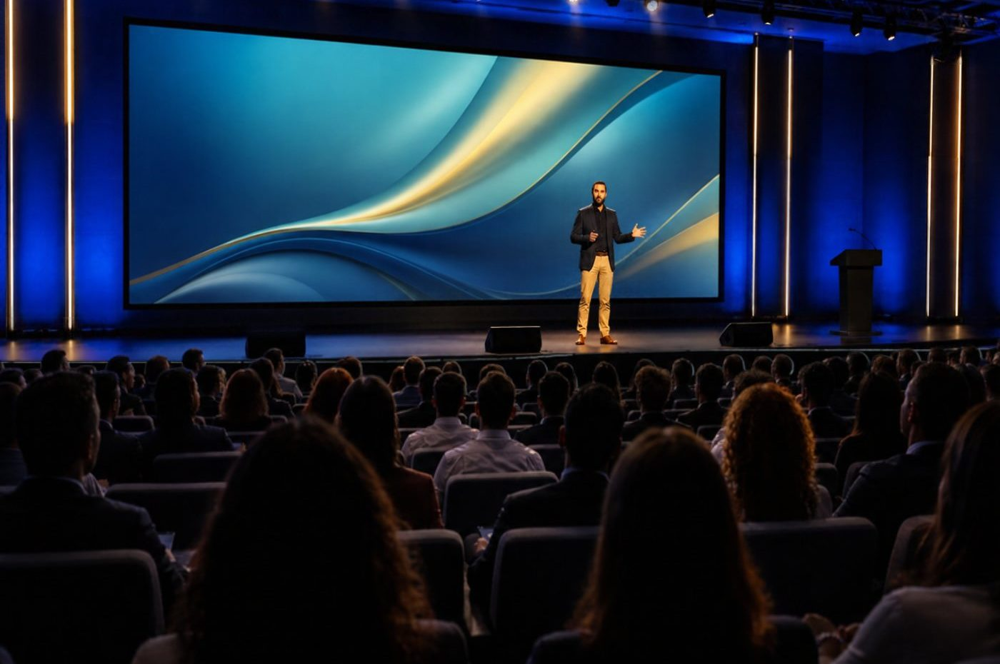

Campinas e região
Eventos para poucos convidados, pensados em cada detalhe.
Cada evento tem uma coordenadora dedicada do primeiro orçamento ao dia da festa, com cronograma e lista de tarefas compartilhados.

- 1.900
- eventos realizados
- 20
- anos de casa
- 300
- convidados no salão principal
- 98%
- dos clientes nos recomendam
O que fazemos
Da cerimônia ao último café, com equipe própria.
Casamentos
Cerimônia no jardim, recepção no salão e dia da noiva no próprio espaço.
Aniversários e bodas
Festas de 15 anos, aniversários adultos e bodas, com decoração temática.
Eventos corporativos
Convenções, confraternizações, treinamentos e lançamentos de produto.
Formaturas
Colações, jantares e bailes, com estrutura de palco e som.
Buffet externo
Levamos cozinha, equipe e louça ao local que você escolher.
Decoração e cerimonial
Flores, mobiliário, iluminação e coordenação do dia.

“Festa boa é aquela em que o anfitrião também se diverte”
Coquetel
- Coquetel clássico12 tipos de finger food, 4 horasR$ 139
- BrunchMesa de pães, frios e quentesR$ 119
- Coffee breakPara eventos corporativosR$ 48
Jantar
- Jantar servidoEntrada, dois pratos e sobremesaR$ 219
- Ilhas gastronômicasMassas, risotos e carnesR$ 189
- ChurrascoCortes nobres e acompanhamentosR$ 169
- Menu infantilPara crianças de 5 a 10 anosR$ 79
Complementos
- Open barDrinques clássicos e autoraisR$ 58
- Mesa de doces20 variedades finasR$ 32
- Decoração floralProjeto personalizadosob consulta

Choveu a tarde inteira e em quarenta minutos a cerimônia estava montada no salão, com as mesmas flores. Os convidados acharam que era o plano desde o começo.
Perguntas frequentes
- Com quanto tempo de antecedência devo reservar?
- Para sábados, recomendamos doze meses. Sextas e domingos costumam ter datas com seis meses.
- Posso levar meus fornecedores?
- Sim, para decoração, música e fotografia. O buffet é sempre o da casa.
- E se chover?
- Temos um plano coberto para todas as cerimônias ao ar livre, sem custo adicional.
- Como funciona o pagamento?
- Entrada de 20% para reservar a data e o restante parcelado até trinta dias antes do evento.